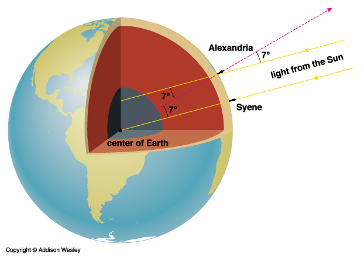
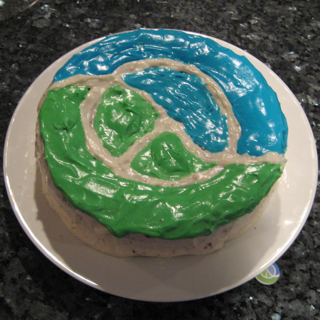
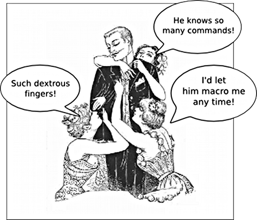

This presentation is an HTML5 website
Presentation template from http://html5rocks.com/
Bodil Stokke
@bodiltv
Find the sum of all prime numbers smaller than 2 million.
276-194 BC

primesTo m = 2 : sieve [3,5..m] where sieve (p:xs) | p*p > m = p : xs | True = p : sieve (xs `minus` [p*p,p*p+2*p..])


Bodil Stokke github.com/bodil @bodiltv